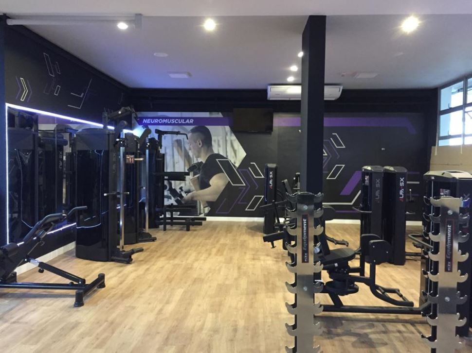

SESI
Venha visitar o sesi
*Após 30 dias, a mensalidade é renovado automaticamente. Cancele a qualquer momento.
Venha visitar o sesi
A quadra do SESI Sorocaba é frequentemente utilizada por escolas e clubes locais para treinamentos e jogos, além de sediar eventos esportivos importantes como campeonatos e torneios regionais. Além disso, a instalação é aberta ao público em geral para a prática de esportes e atividades físicas.

A academia do SESI Sorocaba é uma excelente opção para aqueles que buscam uma vida mais saudável e ativa. Com profissionais qualificados, equipamentos modernos e uma variedade de opções de atividades físicas, a academia oferece tudo o que é necessário para atingir e manter uma boa forma física e uma qualidade de vida saudável.
A sala de judô do SESI Sorocaba é uma instalação esportiva importante na cidade, oferecendo aos praticantes de judô um ambiente seguro e adequado para a prática e desenvolvimento de suas habilidades, além de promover a prática de esportes e um estilo de vida saudável para a comunidade em geral.

A Escola SESI Sorocaba é uma instituição de ensino fundamental e médio localizada na cidade de Sorocaba, no estado de São Paulo, Brasil. A escola faz parte do Sistema FIRJAN, mantido pela Federação das Indústrias do Estado de São Paulo (FIESP), e é reconhecida por sua excelência em educação. A escola oferece uma educação de alta qualidade, com uma equipe de professores altamente qualificados e experientes, que trabalham para oferecer aos alunos um ambiente de aprendizado estimulante e desafiador. A Escola SESI Sorocaba utiliza uma abordagem pedagógica inovadora, com ênfase no desenvolvimento de habilidades como criatividade, pensamento crítico e trabalho em equipe. Além disso, a escola oferece uma ampla variedade de atividades extracurriculares, incluindo esportes, artes, música e ciência, que ajudam a complementar a educação acadêmica dos alunos e desenvolver habilidades para a vida.


|
O Espaço Maker é um ambiente destinado à aprendizagem criativa, à experimentação e ao desenvolvimento de habilidades técnicas. O espaço é equipado com tecnologias de ponta, como impressoras 3D, cortadoras a laser e fresadoras CNC, além de outras ferramentas manuais e eletrônicas para a criação de projetos diversos. O Espaço Maker do SESI Sorocaba é aberto a alunos da rede SESI, professores, empresas parceiras e membros da comunidade, e tem como objetivo promover a inovação, a colaboração e o empreendedorismo. No local, é possível participar de workshops, cursos e atividades que visam estimular a criatividade, a resolução de problemas e o desenvolvimento de projetos em equipe. |